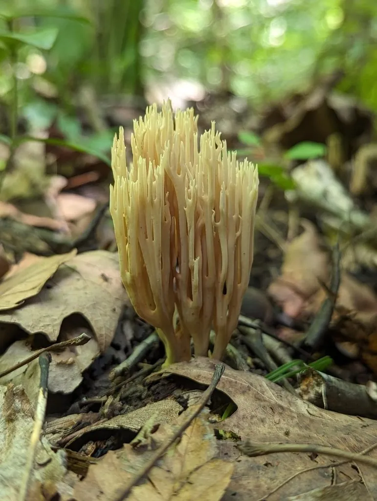

真菌 · 真菌界
枝瑚菌 Ramaria stricta

枝瑚菌的子实体直立分枝、呈淡黄褐色，多丛生于腐木上，与多数长在土里的珊瑚菌不同，质地韧硬，一般不作食用。
- 分类
- 门担子菌门纲伞菌纲目钉菇目科钉菇科属枝瑚菌属
- 栖息环境
- 阔叶树与针叶树的腐木、树桩和木屑上，夏秋季出菇
- 地理分布
- 温带地区广泛分布，中国各地林区有记录
- 保护级别
- 暂无评估（IUCN 未评估，中国未列入重点保护名录）
物种志
枝瑚菌是担子菌门钉菇科的真菌，子实体呈直立的珊瑚状，高 4–10 cm，基部有白色的菌丝索，向上分出许多近平行的直立分枝。整体颜色为淡黄色、黄褐色至赭褐色，受伤或老熟后变为暗褐色。枝端细尖，常呈淡黄色或带褐色。菌肉白色至淡黄色，质地韧硬，孢子印黄褐色至锈褐色。
枝瑚菌最特别之处在于它的生境：多数珊瑚菌长在林地土壤上，而它专门丛生于阔叶树和针叶树的腐木、树桩和木屑上，靠分解木材生长。它在温带地区分布广泛，中国各地林区有记录，夏秋季出菇。枝瑚菌质地韧硬、味道不佳，一般不作食用；部分枝瑚菌近缘种含有毒素，可引起腹泻，野外采食珊瑚菌务必谨慎。它直立如小树丛的形态和“长在木头上”的习性，是辨识它的重要依据。
形态与习性
- 子实体直立珊瑚状，高 4–10 cm
- 颜色淡黄至赭褐色，伤后变暗
- 分枝密集、近平行、直立向上
- 孢子印黄褐色至锈褐色
- 生境腐木、树桩与木屑，不生于土
- 食用性质地韧硬，一般不作食用
趣味知识
- 多数珊瑚菌长在土里，枝瑚菌却专门长在腐木和树桩上。
- 它的分枝直立向上，像一丛淡黄色的小树苗。
- 枝瑚菌质地韧硬，口感差，一般不采食。
- 部分枝瑚菌近缘种有毒，会让人腹泻，野外别乱采。